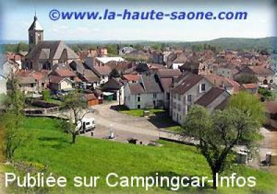

ASN = Aire de services avec stationnement nuit possible de :
SAINT LOUP SUR SEMOUSE
(N° 200)
Accès/adresse :
Rue Guyon Joly
70800 SAINT LOUP SUR SEMOUSE
70800 SAINT LOUP SUR SEMOUSE
Latitude : (Nord) 47.88644° Décimaux ou 47° 53′ 11′′
Longitude : (Est) 6.2705° Décimaux ou 6° 16′ 13′′
Tarif : 2014
Stationnement : gratuit
Services : 2 €
Type de borne : EURO-RELAIS
Services :


Tous commerces
Autres informations :
Ouvert de mars à novembre
2 emplacements
Stationnement limité 24 h
Tel Mairie : +33 (0)384 490 622
Tél Office du Tourisme : +33 (0)384 762 286

Le 29/09/2009 par info
de
Rolf Ca.
le 29/09/2009 :
der Platz ist nach wie vor vorhanden, er wird auch von der regionalen T-Info erwähnt.
Es können dort 2-3 Fahrzeuge nächtigen, tagsüber kann man auf dem etwas größeren Parkplatz ein paar Meter weiter an der Sémouse stehen (nachts?)
der Platz ist nach wie vor vorhanden, er wird auch von der regionalen T-Info erwähnt.
Es können dort 2-3 Fahrzeuge nächtigen, tagsüber kann man auf dem etwas größeren Parkplatz ein paar Meter weiter an der Sémouse stehen (nachts?)
de
Rolf Ca.
le 07/01/2008 :
bei der Recherche nach den Platzangaben mußte ich ersehen, dass der online-Link zu 'Borne Camping Car' auf der Hompage der T.-Info entfernt wurde. Demzufolge gibt es vermutlich diesen Platz nicht mehr? sie auch http://regionsaintloup.free.fr/
bei der Recherche nach den Platzangaben mußte ich ersehen, dass der online-Link zu 'Borne Camping Car' auf der Hompage der T.-Info entfernt wurde. Demzufolge gibt es vermutlich diesen Platz nicht mehr? sie auch http://regionsaintloup.free.fr/
de
Aude DEFRANCE
le 14/08/2003 :
Deux emplacements gratuits, borne Euro Relais, vidanges gratuites, une table de pique-nique. Malgré celà, l'environnement n'est pas très agréable... L'aire est située en face d'appartements en béton où des jeunes squattent la porte d'entrée... Nous n'avons pas tenté de dormir là !
Deux emplacements gratuits, borne Euro Relais, vidanges gratuites, une table de pique-nique. Malgré celà, l'environnement n'est pas très agréable... L'aire est située en face d'appartements en béton où des jeunes squattent la porte d'entrée... Nous n'avons pas tenté de dormir là !